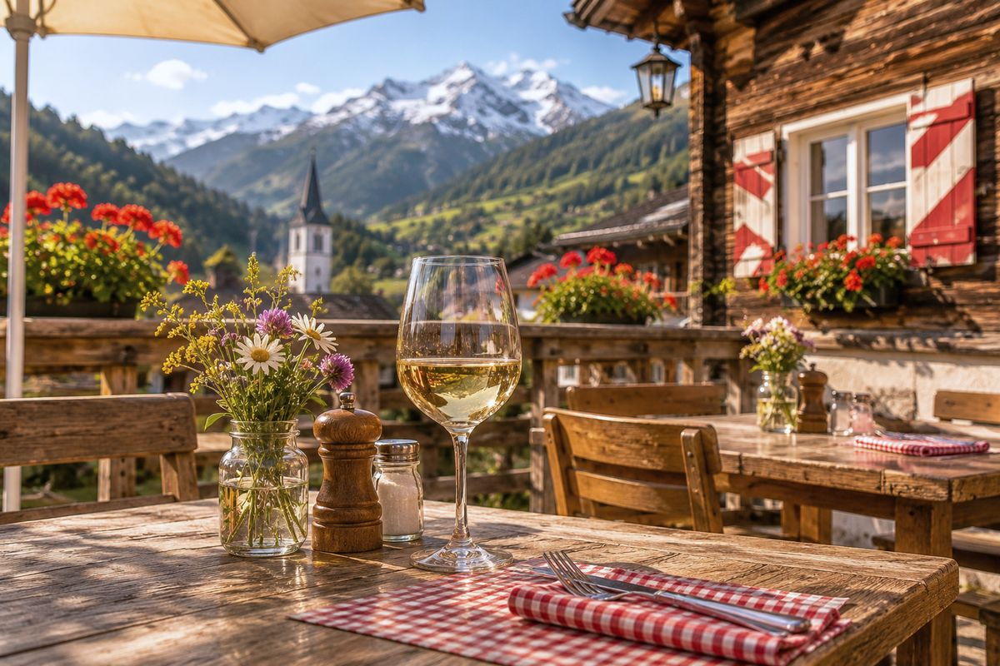
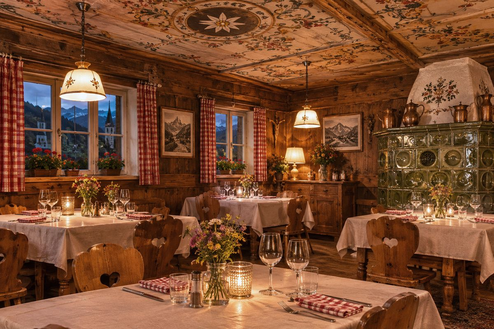
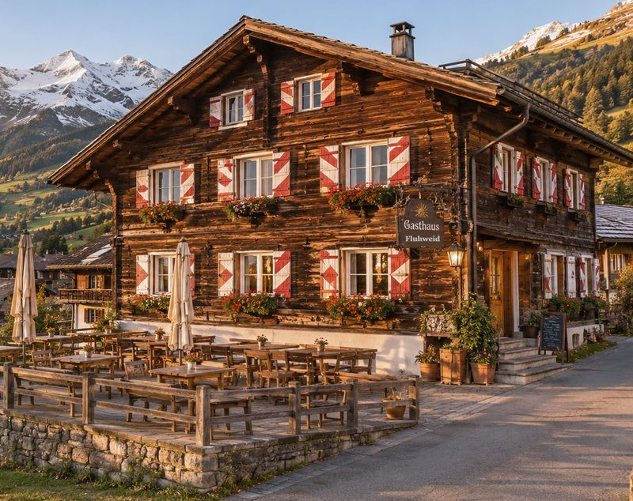
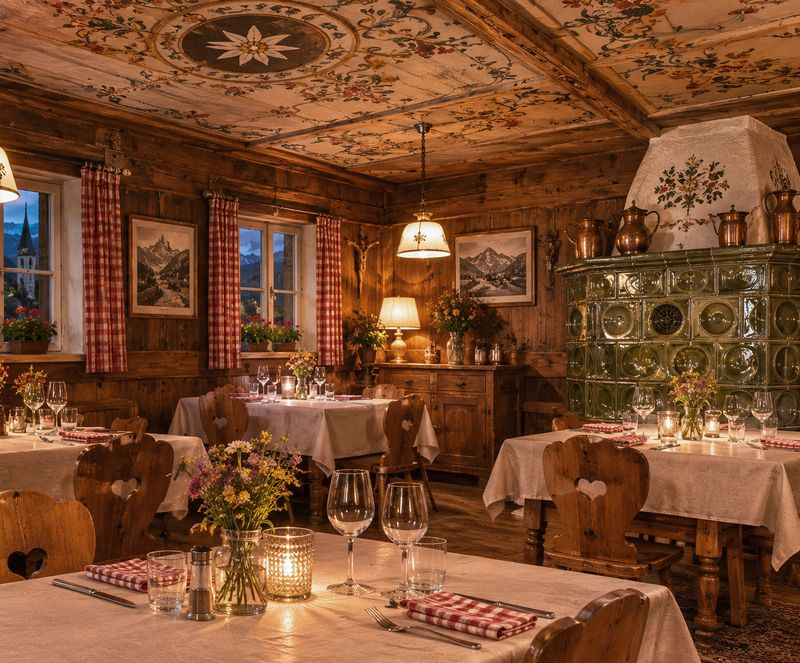
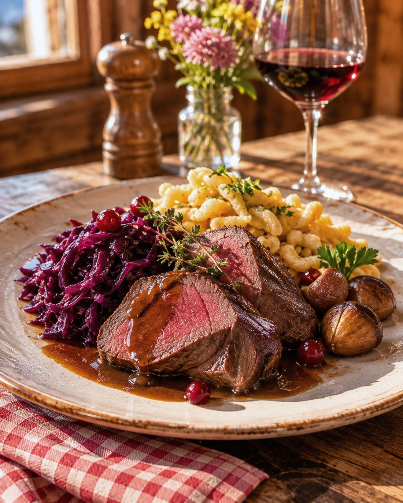
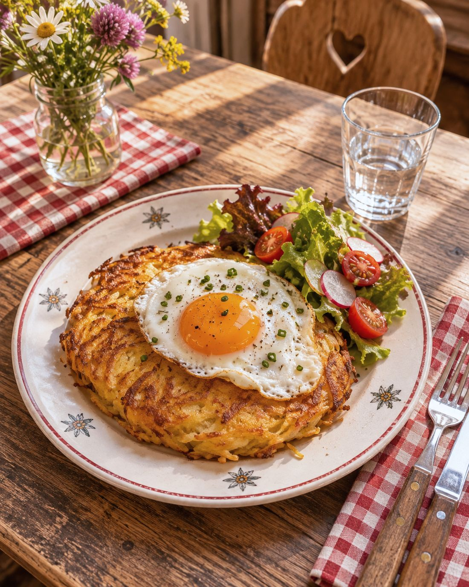
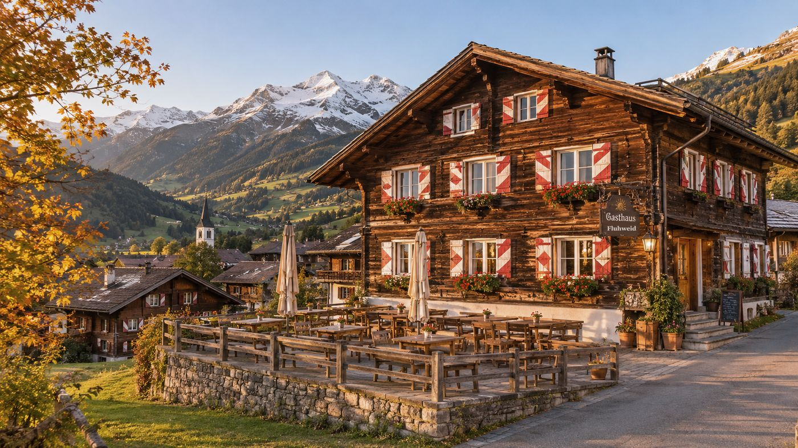

Gasthaus seit 1904 · Bergdorf im Berner Oberland, 1200 m
Mittagessen auf der Terrasse, mit Blick auf die Berge.
Rösti in der Eisenpfanne, im Herbst Wild aus der Jagd im Tal, dazu Alpkäse vom Nachbarhof – in der Gaststube unter der bemalten Decke, am Kachelofen oder draussen an der Sonne. Darüber zwölf Zimmer unter dem Dach von 1904.
Öffnungszeiten
- Mittwoch bis Sonntag
- 9 – 23 Uhr
- Montag und Dienstag
- Ruhetag
- 10. April – 5. Mai
- Betriebsferien


Restaurant
Gaststube, Ofenecke, Terrasse
Gaststube – 45 Plätze unter der bemalten Decke von 1904, Holztische, Wiesenblumen. Schweizer Küche ohne Umwege und offene Weine aus dem Wallis und vom Bielersee.
Ofenecke – 16 Plätze am grünen Kachelofen, für den langen Abend zu zweit oder den Stammtisch nach der Skitour.
Terrasse – 50 Plätze an der Sonne, vom Frühling bis in den Oktober. Ein Glas Weisswein, ein Teller Trockenfleisch, die Gipfel gegenüber.
Jeden ersten Freitag im Monat spielt im Winter eine Ländlerkapelle in der Gaststube.


Aus der Karte · Herbst
Wild aus dem Tal, Rösti aus der Eisenpfanne
Ein Auszug. Preise in CHF inkl. MwSt. Im Herbst kommt die Wildkarte dazu, solange die Jagd dauert.
Wild im Herbst
Rösti
Von der Alp
Dessert
Rösti nature und Gerstensuppe auf Wunsch vegan. Fragen Sie nach Allergenen – die Küche gibt gern Auskunft.


Zimmer · Preise pro Nacht
Zwölf Zimmer unter dem Dach von 1904
Holz an den Wänden, Balken über dem Bett, karierte Vorhänge. Kein Lift – das Haus ist über hundert Jahre alt, die Treppe knarrt. Frühstück mit Brot vom Dorfbäcker, WLAN im ganzen Haus.
| Zimmer | Ausstattung | Zwischensaison | Saison | Buchen |
|---|---|---|---|---|
| Doppel unter dem Dach | Dusche/WC, Tisch mit zwei Stühlen | CHF 170 | CHF 190 | |
| als Einzel | CHF 130 | CHF 145 | ||
| Kammer | Französisches Bett, Dusche/WC | CHF 95 | CHF 110 | |
| Bergblick | Dusche/WC, Sitzecke am Fenster | CHF 210 | CHF 235 | |
| als Einzel | CHF 170 | CHF 185 |
- Preise pro Zimmer und Nacht in CHF, inkl. Frühstück, Taxen und MwSt.
- Saison: 20. Dezember – 31. März und 15. Juni – 20. Oktober. Sonst Zwischensaison. Betriebsferien 10. April – 5. Mai.
- Zusatzbett im Doppel unter dem Dach CHF 45 · Hund auf Anfrage · Halbpension ab 3 Nächten.
- Check-in ab 14 Uhr, Check-out bis 11 Uhr.
Die drei Zimmerarten

Das Haus
Seit 1904 am Dorfplatz
Gebaut als Säumerherberge am Weg über den Pass, seit 1904 Gasthaus: Holz aus dem eigenen Wald, die Fensterläden jedes Frühjahr frisch gestrichen, die Jahreszahl noch über der Tür.
Heute führt die Familie das Haus in vierter Generation. In der Küche steht die Tochter, an der Rezeption der Vater – und die Rösti wird immer noch in derselben Eisenpfanne gebraten.
Gästestimmen · Beispieltexte
So könnten Gäste schreiben
Im Konzept stehen hier die echten Bewertungen des Hauses mit Quelle und Datum. Die drei Stimmen rechts sind Beispieltexte.
«Die Rösti aus der Eisenpfanne, die Sonne auf der Terrasse, der Blick – wir kommen wieder.»
Beispieltext«Einfaches Zimmer unter dem Dach, sehr sauber, und morgens die Berge im Fenster.»
Beispieltext«Herzliche Gastgeber, der Rehpfeffer war der beste seit Jahren.»
Beispieltext
Anreise und Kontakt
Gasthaus Fluhweid · Dorfstrasse 21 · 3757 Sattelried · Schweiz+41 33 155 74 20info@gasthaus-fluhweid.ch
Am Dorfplatz, zehn Minuten zu Fuss vom Postauto. Parkplätze hinter dem Haus. Tischreservation telefonisch oder per E-Mail.
Öffnungszeiten
- Mi – So 9 – 23 Uhr
- Montag und Dienstag Ruhetag
Die Karte wird erst nach dem Klick von OpenStreetMap geladen. Datenschutz